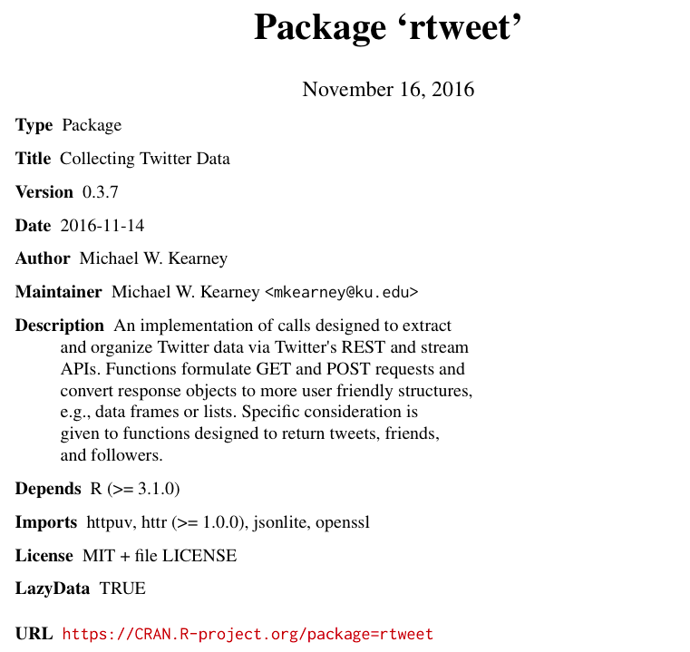
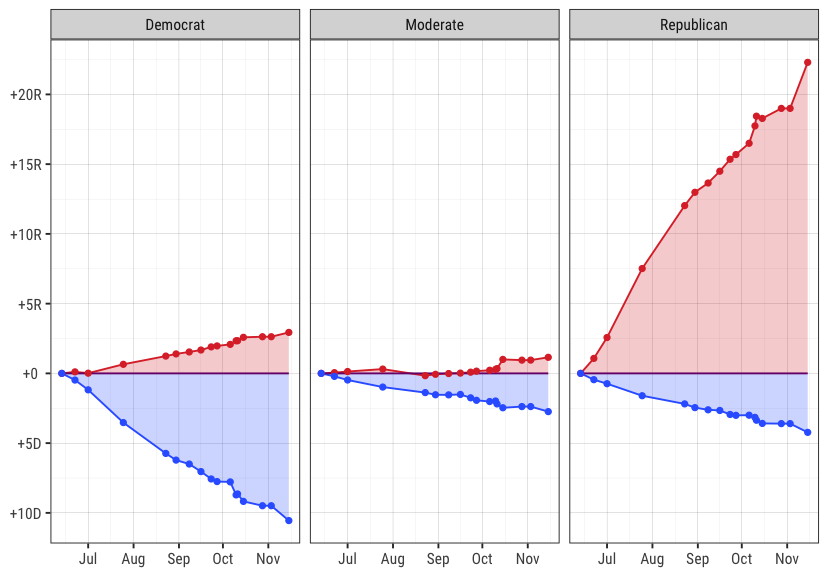

NA
Twitter data for everyone:
An introduction to rtweet
Michael W. Kearney
Assistant Professor
School of Journalism
Informatics Institute
University of Missouri
Michael W. Kearney
Assistant Professor
School of Journalism
Informatics Institute
University of Missouri
Education and training
Research topics


Getting started with rtweet
Tour of rtweet functions
Twitter makes data available via Application Program Interfaces (API)
Twitter APIs of interest:
## Authorizing API access
vignette(topic = "auth", package = "rtweet")
## Overview
vignette(topic = "intro", package = "rtweet")
## Streaming API
vignette(topic = "stream", package = "rtweet")
## list of functions
help(package = "rtweet")
## download from CRAN
install.packages("rtweet")
## or download dev version from Github
if (!"devtools" %in% installed.packages()) {
install.packages("devtools")
}
devtools::install_github("mkearney/rtweet")
## load rtweet
library(rtweet)
http://127.0.0.1:1410


## whatever name you assigned to your created app
appname <- "rtweet_token"
## api key (example below is not a real key)
key <- "XYznzPFOFZR2a39FwWKN1Jp41"
## api secret (example below is not a real key)
secret <- "CtkGEWmSevZqJuKl6HHrBxbCybxI1xGLqrD5ynPd9jG0SoHZbD"
## create token named "twitter_token"
twitter_token <- create_token(
app = appname,
consumer_key = key,
consumer_secret = secret)
## path of home directory
home_directory <- path.expand("~")
## combine with name for token
file_name <- file.path(home_directory, "twitter_token.rds")
## save token to home directory
saveRDS(twitter_token, file = file_name)
## On my mac, the .Renviron text looks like this:
## TWITTER_PAT=/Users/mwk/twitter_token.rds
## assuming you followed the procodures to create "file_name"
## from the previous code chunk, then the code below should
## create and save your environment variable.
cat(paste0("TWITTER_PAT=", file_name),
file = file.path(home_directory, ".Renviron"),
append = TRUE)
## get most recent 75k followers
flw1 <- get_followers("realdonaldtrump", n = 75000)
flw1
## # A tibble: 75,000 x 1
## user_id
## <chr>
## 1 861962717929680896
## 2 873573516393803776
## 3 873572121561124864
## 4 873573581451657216
## 5 873562392952676352
## 6 873573260625158144
## 7 873573740864561152
## 8 873573140814802944
## 9 871801684510507008
## 10 873573061219504128
## set page value using next cursor extractor
page <- next_cursor(flw1)
page
## [1] "1569708984537163520"
## use page value to continue where left off
flw2 <- get_followers(
"realdonaldtrump", n = 75000, page = page)
rate_limit functionrate_limit(get_tokens())[1:3, ]
## query limit remaining reset
## 1 lists/list 15 15 14.975 mins
## 2 lists/memberships 75 75 14.975 mins
## 3 lists/subscribers/show 15 15 14.975 mins
## get list of accounts followed BY a user
fds <- get_friends("kearneymw")
fds
## # A tibble: 962 x 1
## user_id
## <chr>
## 1 843078227488915456
## 2 835148691593887744
## 3 795751822585688064
## 4 707260960491376640
## 5 1349865410
## 6 836165272780345344
## 7 428333
## 8 227812077
## 9 859179631664021504
## 10 337950234
## # ... with 952 more rows
next_cursor(fds)
## [1] "0"
## get users data for my friends
usrs <- lookup_users(fds$user_id)
usrs
## # A tibble: 929 x 36
## user_id name screen_name location
## <chr> <chr> <chr> <chr>
## 1 795751822585688064 Scott Harris sm_kepler New York, NY
## 2 707260960491376640 Mohammed Zakaria zakariaCatapult Chicago, IL
## 3 1349865410 Marnie Ritchie marnieritchie Austin, TX
## 4 836165272780345344 Stuart Allen steadystuart <NA>
## 5 428333 CNN Breaking News cnnbrk Everywhere
## 6 227812077 rubaie brubaie kcmo
## 7 337950234 tewsie1 tewsie1 Waterloo IA
## 8 14135384 Seth Ellsworth pinto4life Austin, TX
## 9 57371972 amanda luppes ford aluppes Austin
## 10 224161598 Georgina Cosma gcosma1 Nottingham, England
## # ... with 919 more rows, and 32 more variables: description <chr>,
## # protected <lgl>, followers_count <int>, friends_count <int>,
## # listed_count <int>, created_at <dttm>, favourites_count <int>,
## # utc_offset <int>, time_zone <chr>, geo_enabled <lgl>, verified <lgl>,
## # statuses_count <int>, lang <chr>, contributors_enabled <lgl> ...
rt <- search_tweets(
"rstats", n = 300, include_rts = FALSE, exact = TRUE)
## Searching for tweets...
## Finished collecting tweets!
rt
## # A tibble: 300 x 35
## screen_name user_id created_at status_id
## <chr> <chr> <dttm> <chr>
## 1 phnk 14460093 2017-06-10 16:16:14 873574535358029824
## 2 jletteboer 92526801 2017-06-10 16:12:47 873573666776391680
## 3 BigDataInsights 89191817 2017-06-10 16:12:42 873573649416163328
## 4 CRANberriesFeed 233585808 2017-06-10 16:02:18 873571030740201473
## 5 DeborahTannon 821976676842242050 2017-06-10 16:00:52 873570670097182721
## 6 AnalyticsVidhya 2311645130 2017-06-10 16:00:18 873570526085697537
## 7 EdwardEgrosFox4 15553592 2017-06-10 15:59:12 873570249186136065
## 8 Rbloggers 144592995 2017-06-10 15:57:17 873569768019767296
## 9 geoappsmith 3306901413 2017-06-10 15:56:53 873569666547032064
## 10 juliasilge 13074042 2017-06-10 15:56:15 873569506215346176
## # ... with 290 more rows, and 31 more variables: text <chr>,
## # retweet_count <int>, favorite_count <int>, is_quote_status <lgl>,
## # quote_status_id <chr>, is_retweet <lgl>, retweet_status_id <chr> ...
rt$text[1:5]
## [1] "Dear #rstats – If R is executable from Microsoft Server, does that mean that it's now technically feasible to run a DDoS from R?"
## [2] "Networkx #Datascience #Bigdata Tools is out! https://t.co/gASnKtH0bU Tweets via @CodeDocta @ijstokes @EwaldSchmidt #rstats"
## [3] "#RStats —Engaging the tidyverse Clean Slate Protocol : https://t.co/mrjCI8YYdH"
## strip formatting, URLs, mentions, hashtags, etc.
plain_tweets(rt$text[1:5], include_hashtags = FALSE)
## [1] "dear if r is executable from microsoft server does that mean that its now technically feasible to run a ddos from r"
## [2] "networkx tools is out tweets via"
## [3] "engaging the tidyverse clean slate protocol"
## time series plot
ts_plot(rt, by = "hours")

users_data()## extract users data from rt (tweets data)
users_data(rt)
## # A tibble: 300 x 36
## user_id name screen_name
## <chr> <chr> <chr>
## 1 14460093 Fr. phnk
## 2 92526801 John Letteboer jletteboer
## 3 89191817 Marty Wells BigDataInsights
## 4 233585808 CRAN Package Updates CRANberriesFeed
## 5 821976676842242050 Deborah Tannon DeborahTannon
## 6 2311645130 Analytics Vidhya AnalyticsVidhya
## 7 15553592 Edward Egros EdwardEgrosFox4
## 8 144592995 R-bloggers Rbloggers
## 9 3306901413 Geo.Appsmith geoappsmith
## 10 13074042 Julia Silge juliasilge
## # ... with 290 more rows, and 33 more variables: location <chr> ...
## load state data
data("state")
## initialize vector
state_tweets <- vector("list", 50)
## loop through 50 states
for (i in seq_along(state_tweets)) {
state_tweets[[i]] <- search_tweets(
paste0("comey OR trump geocode:",
state.center$y[i], ",",
state.center$x[i], ",",
"50mi"),
)
}

## comey stream
comes <- stream_tweets("comey,trump", timeout = 60 * 3)
## get plain text
twt <- plain_tweets(comes$text, include_hashtags = TRUE)
## sentiment analysis
sa <- syuzhet::get_nrc_sentiment(twt)
comes <- tibble::as_tibble(cbind(comes, sa))


